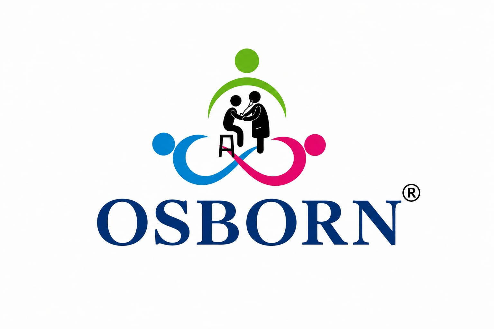

Check availability
Call before visiting to ask about the medicines or pharmacy item on your prescription.

Healthcare CentreOSBORN PHARMACY
For medicine availability and pharmacy guidance, call before visiting. Our team can help you prepare for a smoother visit.
Call before visitingCheck the medicine or product you need
Bring your recordsPrescription and current medicine list
Ask when unsureGet directed to the right clinical support
Support for your care
For ongoing care or a recent consultation, call ahead so the team can guide you on medicine availability and what to bring.
Call before visiting to ask about the medicines or pharmacy item on your prescription.
Keep your current prescription and medicine list with you, especially for ongoing care.
After a consultation, ask the team if you need clinical advice or a follow-up appointment.
BEFORE YOU VISIT
For prescription requirements, stock availability and pharmacy collection guidance, please call before you travel.
Medication safety
Medicines can affect each other and may need adjustment as your health changes. If you are unsure about a medicine, speak with your doctor or the clinic team.
Helpful answers
For specific medicine, prescription or availability information, please call the main centre directly.
Yes. Call the main centre with the medicine name and prescription details, so the team can guide you before you visit.
Please bring your current prescription or doctor’s note whenever you have one. Call ahead if you need guidance for a specific medicine.
For any change to prescribed medication, please speak with your doctor or the clinical team. Do not change medication on your own.
Delivery, refill and direct pharmacy contact details are being confirmed with the team. Please call the main centre for the latest guidance.
CHECK BEFORE YOU COME
Call the main centre to check pharmacy information, medicine availability or the right next step for your family’s care.
The pharmacy’s direct contact details, precise location and any delivery or refill support will be added once confirmed by the pharmacy team.